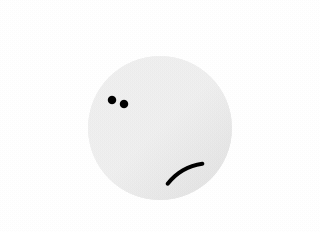
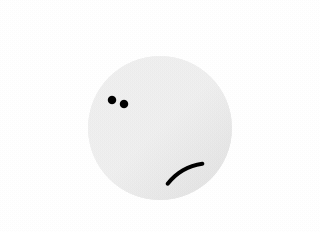
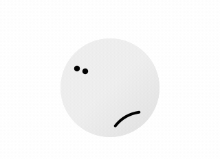
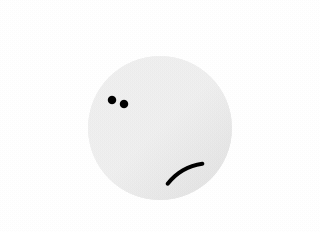
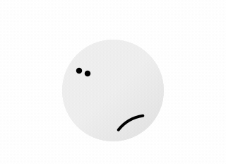

Work Responsibly
About
Suggest a link
Work Responsibly
A collection of resources for a healthy and balanced approach to work.
Browse topics and ressources
What's your struggle
Stress, Sleep, Focus, Anxiety, Confidence, Motivation ....



 

 
